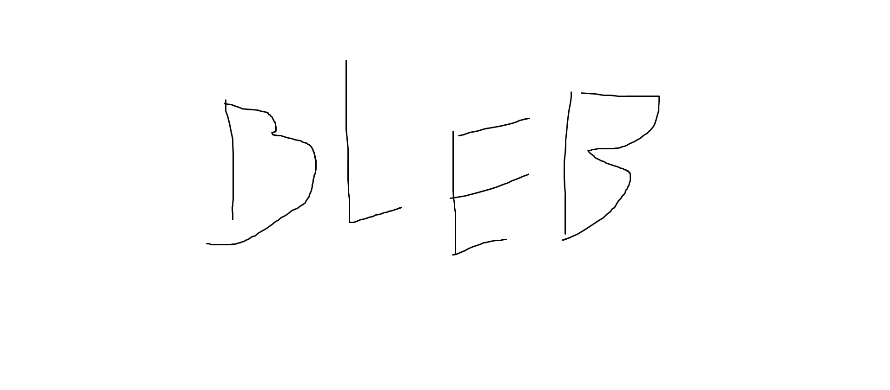

Info
Ma õpin TTHK, minu hobby on muusika
Pildid

Programmeerimine
Arvutiprogrammi võib jagada väiksemateks osadeks ehk alamprogrammideks. Näiteks võib pangaautomaadi programmis olla alamosa, mis tegeleb kontojäägi näitamisega.
Programmis juhtub sageli, et sarnast alamprogrammi kasutatakse mitmes erinevas kohas.
Selle asemel, et korduvat alamprogrammi kõikjal eraldi välja kirjutada, on arukam see alamprogramm kirjeldada täpselt ühes kohas ning edaspidi sellele kohale viidata. Sellist lahendust nimetame funktsiooniks.